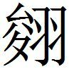
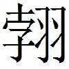

趙二
蘇秦從燕之趙始合從
蘇秦從燕之趙〔一〕 ，始合從，說趙王曰：「天下之卿相人臣，乃至布衣之士，莫不高賢大王之行義，皆願奉教陳忠於前之日久矣。雖然，奉陽君妒〔二〕 ，大王不得任事，是以外〔三〕 賓〔四〕 客遊談之士，無敢盡忠於前者。今奉陽君捐館舍〔五〕 ，大王乃今然後得與士民相親，臣故敢獻其愚，效愚忠〔六〕 。為大王計，莫若安民無事，請無庸有為也。安民之本，在於擇交〔七〕 。擇交而得則民安，擇交不得則民終身〔八〕 不得安。請言外患：齊、秦為兩敵〔九〕 ，而民不得安；倚秦攻齊，而民不得安；倚齊攻秦，而民不得安。故夫謀人之主，伐人之國，常苦〔一〇〕 出辭斷絕人之交〔一一〕 ，願大王慎無出於口也。
〔一〕 鮑本 此十六年。
〔二〕 鮑本 秦傳 言肅侯令其弟成為相，號奉陽君。妒，嫉賢也。正曰：奉陽君，說見後。
〔三〕 鮑本 外，疏之也。
〔四〕 姚本 錢、劉去「賓」字。
〔五〕 鮑本 禮 ，婦人死曰捐館舍，蓋亦通稱。
〔六〕 鮑本 「獻」作「進」，無「效愚」二字。札记 丕烈案：史記 作「進其愚慮」。此策 文當是「獻其愚」下脫「慮」字。「效愚忠」三字別為句。
〔七〕 鮑本 與諸侯交。
〔八〕 鮑本 終趙王身。
〔九〕 鮑本 為趙敵。
〔一〇〕 鮑本 苦，言其力。
〔一一〕 鮑本 橫人蓋然。
「請屏左右，曰〔一〕 言所以異，陰陽〔二〕 而已矣。大王誠能聽臣，燕必致氊裘狗馬之地，齊必致海隅魚鹽之地，楚必致橘柚雲夢之地，韓、魏皆可使致封地〔三〕 湯沐之邑，貴戚父兄皆可以受封侯。夫割地效實〔四〕 ，五伯之所以覆軍禽將而求也；封侯貴戚，湯、武之所以放殺而爭也〔五〕 。今大王垂拱而兩有之，是臣之所以為大王願也。大王與秦，則秦必弱韓、魏；與齊，則齊必弱楚、魏。魏弱則割河外〔六〕 ，韓弱則效宜陽〔七〕 。宜陽效則上郡絕〔八〕 ，河外割則道不通。楚弱則無援。此三策 者，不可不熟計也。夫秦下軹道〔九〕 則南陽動〔一〇〕 ，劫韓包周則趙自銷鑠，據衛取淇則齊必入朝。秦欲已得行〔一一〕 於山東，則必舉甲而向趙。秦甲涉河踰漳，據番吾〔一二〕 ，則兵必戰於邯鄲之下矣。此臣之所以為大王患也。
〔一〕 鮑本 「曰」作「白」。補曰：史 作「請別白黑所以異」。大事記 謂，當從策 。按索隱 引策 作「白言」，尤明。札记 丕烈案：此「曰」即「白」之訛。
〔二〕 鮑本 陰陽，言事只有兩端，指謂從橫。
〔三〕 鮑本 封內之地。正曰：下文封侯之類。
〔四〕 鮑本 實，如氊裘之類。
〔五〕 鮑本 此非所以言湯、武，蓋游士之詞。
〔六〕 鮑本 補曰：正義 云，河外，同華等地，此即西河之外也。
〔七〕 鮑本 皆以地與秦。
〔八〕 鮑本 并州郡。正曰：正義 云，上郡在同州西北則屯。廣記云，今鄜、延安、丹坊部銀夏、綏德、保安之地。
〔九〕 鮑本 秦紀 注，亭名，在霸陵。正曰：故軹城在懷州濟源縣東南，以下言修武之南陽知之。按大事記 ，顯王十一年，韓使計息以枳道易鹿於魏。水經注 ，年表 ，赧王三十六年，秦伐魏至軹，取城大小六十一，皆魏之軹也。「軹」，「枳」通。策 又作「咫」。蘇秦傳 云，秦下軹道則南陽危。又云，我下軹道、南陽、封冀。亦指此。其言秦者在雍州萬年縣東北，去霸水百步。軹道亭，秦王降處也。蘇代云，楚得枳而國亡，則巴郡之枳也。
〔一〇〕 鮑本 修武者。
〔一一〕 姚本 錢、劉去「行」字。
〔一二〕 鮑本 補曰：正義 云，番，音婆，又音蒲、音盤。徐廣云，常山蒲吾縣。淇、常山、河、漳、清河皆見前。
「當今之時，山東之建國，莫如趙強。趙地方二千里〔一〕 ，帶甲數十萬，車千乘，騎萬匹，粟支十年；西有常山，南有河、漳，東有清河，北有燕國。燕固弱國，不足畏也。且秦之所畏害於天下者，莫如趙〔二〕 。然而秦不敢舉兵甲而伐趙者，何也？畏韓、魏之議其後也。然則韓、魏，趙之南蔽也。秦之攻韓、魏也，則不然。無有名山大川之限，稍稍蠶食之，傅之國都而止矣〔三〕 。韓、魏不能〔四〕 支秦，必入臣。韓、魏臣〔五〕 於秦，秦無韓、魏之隔，禍中〔六〕 於趙矣。此臣之所以為大王患也。
〔一〕 鮑本 「二」作「三」。札记 丕烈案：史記 作「二千餘里」。
〔二〕 鮑本 言秦於天下，獨畏趙害己。
〔三〕 鮑本 「傅」，「附」同。止，兵止於此。
〔四〕 姚本 錢、劉本無「能」字。
〔五〕 鮑本 無「韓魏臣」三字。札记 丕烈案：史記 無。
〔六〕 鮑本 「中」上有「必」字。猶射中的。札记 丕烈案：史記 有。
「臣聞，堯無三夫之分，舜無咫尺之地，以有天下。禹無百人之聚，以王諸侯〔一〕 。湯、武之卒不過三千人，車不過三百乘，立為天子。誠得其道也。是故明主外料其〔二〕 敵國之強弱，內度其士卒之眾寡、賢與不肖，不待兩軍相當，而勝敗存亡之機節〔三〕 ，固已見於胸中矣，豈掩〔四〕 於眾人之言，而以冥冥決事哉！
〔一〕 鮑本 一夫有田百畝。此未為唐侯時。正曰：此說士無據之辭。且舜，顓頊後，有國於虞。其側微，特在下爾。禹乃崇伯鯀子，亦有國土者。今曰云云，豈足信哉？枚乘書「舜無立錐之地，禹無十戶之聚」，李善注又引韓子 云云，皆此類。
〔二〕 姚本 一本無「其」字。
〔三〕 姚本 一本無「節」字。鮑本 節，節目。
〔四〕 姚本 錢、劉作「闇」。鮑本 掩，猶蔽。
「臣竊以天下地圖案之。諸侯之地五倍於秦，料諸侯之卒，十倍於秦。六國并力為一，西面而攻秦，秦〔一〕 破必矣。今見破於秦，〔二〕 西面而事之，見臣於秦。夫破人之與破於人也，臣人之與臣於人也，豈可同日而言之哉！夫橫人者，皆欲割諸侯之地以與秦成。與秦成，則高臺〔三〕 ，美宮室，聽竽瑟〔四〕 之音，察五味之和，前有軒轅〔五〕 ，後有長庭〔六〕 ，美人巧笑，卒〔七〕 有秦患，而不與其憂。是故橫人日夜務以秦權恐猲〔八〕 諸侯，以求割地。願大王之熟計之也。
〔一〕 鮑本 原無「秦」字，「破」上補「秦」字。補曰：一本復有「秦」字。札记 丕烈案：史記 有。
〔二〕 姚本 一本無此「見破于秦」四字。鮑本 無「今見破于秦」五字，補「今」字。補曰：一本「今見破於秦西面」云云。札记 丕烈案：史記 有「今」字，無「見破於秦」四字。
〔三〕 鮑本 「臺」下補「榭」字。臺有木曰榭。補曰：史 作「臺榭」。
〔四〕 鮑本 「竽」下有「笙琴」二字。補曰：一本無「笙琴」字。札记 丕烈案：史記 無。
〔五〕 鮑本 天文志 ，「權軒轅，象後宮」。此言美人之所處也。
〔六〕 姚本 一本改「庭」作「姣」。
〔七〕 鮑本 「卒」，「猝」同。
〔八〕 鮑本 「猲」作「喝」。正曰：「喝」，「猲」通。見齊策 。此章史 作「愒」，相恐脅也。前漢·王子侯表 ，「坐恐猲」，並許葛反。
「臣聞，明王絕疑去讒，屏流言之跡，塞朋黨之門，故尊主廣地強兵之計，臣得陳忠於前矣。故竊為大王計，莫如一韓、魏、齊、楚、燕、趙，六國從親〔一〕 ，以儐〔二〕 畔秦。令天下之將相，相與會於洹水〔三〕 之上，通質刑白馬以盟之。約曰：秦攻楚，齊、魏各出銳師以佐之，韓絕食道，趙涉河、漳，燕守常山之北。秦攻韓、魏，則楚絕其後，齊出銳師以佐之，趙涉河、漳，燕守雲中〔四〕 。秦攻齊，則楚絕其後，韓守成臯，魏塞午道〔五〕 ，趙涉河、漳、博關〔六〕 ，燕出銳師以佐之。秦攻燕，則趙守常山，楚軍武關，齊涉渤海，韓、魏出銳師以佐之。秦攻趙，則韓軍宜陽，楚軍武關，魏軍河外，齊涉渤海，燕出銳師以佐之。諸侯有先背約者，五國共伐之。六國從親以擯〔七〕 秦，秦必不敢出兵於函谷關以害山東矣！如是則伯業成矣！」
〔一〕 札记 今本「親」誤「國」。
〔二〕 札记 丕烈案：此句「儐」字，當是因下句而衍。史記 無。
〔三〕 鮑本 補曰：洹水，見秦策 。
〔四〕 鮑本 并州郡。
〔五〕 鮑本 王莽傳 注，「今京城直南山有谷，通漢、梁道者，名子午谷。又宜州西、慶州東有山名子午嶺，南北直相當。此則北山是子，南山是午，共為子午道。」詳此，則午道，秦南道也。塞之使不得通。莽所通者因秦也。正曰：索隱 云，當在趙東齊西。午道，地名也。鄭玄云，「一從一橫為道，謂交道也。」按下張儀說趙王章亦有。
〔六〕 鮑本 補曰：博關見齊策 。
〔七〕 鮑本 「擯」作「儐」。「儐」元作「擯」，無異義，今並從前作「儐」。正曰：說已見前。札记 丕烈案：史記 作「賓」。
趙王曰：「寡人年少，蒞國之日淺，未嘗得聞社稷之長計。今上客有意存天下，安諸侯，寡人敬以國從。」乃封蘇秦為武安君，飾車百乘，黃金千鎰，白璧百雙，錦繡千純，以約諸侯。〔一〕
〔一〕 鮑本 秦傳 有，在說燕後。彪謂：從約者，天下之心，亦其勢也。夫秦有吞天下之心，不盡不止。諸侯皆病之，而欲儐之，此其心也。同舟遇風，胡、越之相救，如手足於其頭目，此其勢也。以天下之心，行天下之勢，如水之就下，孰能禦之？故謂之從。從者，從也，順也。其所不可者，諸侯之心不一。夫其心不一者，非明計智算也，或見少利而相侵，或修小怨而相伐，或眩於名實而為橫人之所恐喝。此張儀所以投隙而起。使諸侯之智少靈於連雞，則秦人自保之不給，安能圖併吞之舉耶！儀謂秦地形勢便，兵強士武，足以橫天下，然則天時、人和，道德之威，仁義之澤，舉無與於興亡之數乎？雖然，一從一橫，皆一偏之論，有王者作，則從橫皆廢，而天下定，而非所以論於此時也。補曰：璧、純，並見秦策 。
秦攻趙〔校一〕
〔校一〕 此篇鮑本在秦策 。
秦攻趙，蘇子為〔一〕 謂秦王曰：「臣聞明王之於其民也，博論而技藝〔二〕 之，是故官無乏事而力不困；於其言也，多聽而時用之，是故事無敗業而惡不章。臣願王察臣之所謁，而效之於一時之用也。臣聞懷重寶者，不以夜行；任大功者，不以輕敵。是以賢者任重而行恭，知者功大而辭順〔三〕 。故民不惡其尊，而世不妒〔四〕 其業。臣聞之：百倍之國者〔五〕 ，民不樂後也〔六〕 ；功業高世者，人主不再行也〔七〕 ；力盡之民，仁者不用也；求得而反靜〔八〕 ，聖主〔九〕 之制也；功大而息民，用兵之道也。今用兵終身不休，力盡不罷，趙怒〔一〇〕 必於其己邑〔一一〕 ，趙僅存哉〔一二〕 ！然而四輪〔一三〕 之國也，今雖〔四〕 得邯鄲，非國之長利也。意者，地廣而不耕，民羸而不休，又嚴之以刑罰〔一五〕 ，則雖從而不止矣。〔一六〕 語曰：『戰勝而國危者，物不斷也〔一七〕 。功大而權輕者，地不入也〔一八〕 。』故過任之事，父不得於子〔一九〕 ，無已之求，君不得於臣。故〔二〇〕 微之為著者強，察乎息民之為用者伯，明乎輕之為重者王〔二一〕 。」
〔一〕 姚本 一本無「為」字。鮑本 無「為」字。
〔二〕 鮑本 試之以事。
〔三〕 鮑本 皆不伐也。
〔四〕 鮑本 「妒」作「姤」。補曰：訛，當作「妒」。
〔五〕 鮑本 謂地廣也。
〔六〕 鮑本 爭先附之。正曰：地既廣矣，民不樂其後之復有事也。
〔七〕 鮑本 一舉成之，不待後。正曰：大功不再。
〔八〕 鮑本 復於無事。
〔九〕 鮑本 「主」作「王」。
〔一〇〕 鮑本 「趙怒」作「怒趙」。補曰：當作「怒趙」。札记 丕烈案：此有誤字。
〔一一〕 鮑本 必欲戰服，使為己邑。
〔一二〕 鮑本 言所存無幾。
〔一三〕 鮑本 輪，猶通，言其民於適四方，無所不通。故下言「從而不止」。正曰：姚本 作「四輸」，是言四面輸寫之國。札记 今本「輪」作「輸」。丕烈案：作「輸」者，姚別本。
〔一四〕 鮑本 時攻邯鄲不拔，故曰「今雖」。
〔一五〕 鮑本 新民未服故。
〔一六〕 鮑本 言且去之。
〔一七〕 鮑本 物，事也。斷，猶止。言戰事不止。
〔一八〕 鮑本 補曰：戰勝國宜安，而愈戰則國危。功大權宜重，而愈求功則權輕。危，故物不止。輕，故地不入。不斷、不入，因上文「用兵不休」與「雖從而不止」言之。
〔一九〕 鮑本 雖父責之其子使必為，不可得也。
〔二〇〕 鮑本 補曰：此下當有缺字，以下文推之可見。
〔二一〕 鮑本 不伐人，人所輕也，重莫大焉。
秦王曰：「寡人案兵息民，則天下必為從，將以逆秦。」
蘇子曰：「臣有以知天下之不能為從以逆秦也。臣以田單、如耳為大過也〔一〕 。豈獨田單、如耳為大過哉？天下之主亦盡過矣！夫慮收亡〔二〕 齊〔三〕 、罷〔四〕 楚、敝魏與不可知之趙〔五〕 ，欲以窮秦折韓，臣以為至愚也。夫齊威、宣〔六〕 ，世之賢主也，德博而地廣，國富而用民〔七〕 ，將武而兵強。宣王用之，後富〔八〕 韓威魏，以南伐楚，西攻秦〔九〕 ，為齊兵困於殽塞〔一〇〕 之上〔一一〕 ，十年攘〔一二〕 地，秦人遠跡不服〔一三〕 ，而齊為虛戾〔一四〕 。夫齊兵之所以破，韓、魏之所以僅存者，何也〔一五〕 ？是則伐楚攻秦，而後受其殃也。今富非有齊威、宣之餘也〔一六〕 ，精兵非有富韓勁魏之庫也，而將非有田單、司馬〔一七〕 之慮也。收破齊、罷楚、弊魏、不可知之趙，欲以窮秦折韓，臣以為至誤。臣以〔一八〕 從一〔一九〕 不可成也。客有難者〔二〇〕 ，今臣〔二一〕 有患於世。夫刑名之家〔二二〕 ，皆曰『白馬非馬』也。已如白馬實馬，乃使有白馬之為也〔二三〕 。此臣之所患也〔二四〕 。
〔一〕 鮑本 補曰：如耳，見前。此時必二人欲為從，故云然。
〔二〕 姚本 曾改「亡」作「破」。
〔三〕 鮑本 言世主志慮欲爾。補曰：「亡齊」，指其嘗亡於燕言之。下作「破齊」。
〔四〕 鮑本 並音疲。
〔五〕 鮑本 未亡而有亡形。正曰：言其存亡不可知。
〔六〕 鮑本 「宣」下有「者」字。
〔七〕 鮑本 「用兵」作「民用」。民為之用。補曰：當作「民用」。
〔八〕 鮑本 「富」作「破」。補曰：字因下誤，疑為「逼」。
〔九〕 鮑本 「秦」下補「秦」字。補曰：宜復有「秦」字。
〔一〇〕 鮑本 「塞」作「函」。
〔一一〕 鮑本 補曰：按秦惠後七年，五國擊秦，齊師獨後不敗，他戰無考。一本「殽塞之上」。
〔一二〕 鮑本 攘，推也，猶拓。
〔一三〕 鮑本 遠跡，畏而避之也，然終不服。
〔一四〕 鮑本 戰敗，其地為虛，其民為戾。戾，疾也。按齊記 及表不書秦敗齊。唯秦記 惠十三年，東攻齊；昭二十二年，伐齊河東，取九縣；三十六年，攻齊，取剛壽，不至，是也。此樂毅入臨淄之役也，秦與五國共敗之。補曰：趙策 亦有「社稷為虛戾」之語。莊子 ，「國為虛厲」。釋文 ，「虛，如字，又音墟。李云，居宅無人曰虛，死而無後為厲」。恐此「戾」即「厲」也。
〔一五〕 鮑本 破韓、魏，宜能強，而適足自存者何？正曰：齊宜強而反遭破，韓、魏宜亡而乃僅存，何也？故下文言齊之受殃。注讀句誤。
〔一六〕 鮑本 今，謂世主。
〔一七〕 鮑本 司馬穰苴。以齊言之耳，非威、宣將。正曰：說見齊策 。
〔一八〕 鮑本 「以」下有「為」字。
〔一九〕 鮑本 合從為一。正曰：當作「一不可成」。下文「從之一成」可見。
〔二〇〕 鮑本 難者，如刑名家，蘇子所患也。
〔二一〕 鮑本 「臣」作「人」。
〔二二〕 鮑本 申、韓之徒。
〔二三〕 鮑本 如使白馬實馬，必有白馬之為，而天下之馬不皆為白馬，故曰非馬。
〔二四〕 鮑本 言難者皆無端若此，故可患。而今非若此也。
「昔者，秦人下兵攻懷〔一〕 ，服其人，三國從之〔二〕 。趙奢、鮑佞〔三〕 將〔四〕 ，楚有四人〔五〕 起而從之。臨懷而不救，秦人去而不從〔六〕 。不識三國之憎秦而愛懷邪？忘〔七〕 其〔八〕 憎懷而愛秦邪？夫攻而不救，去而不從，是以〔九〕 三國之兵困，而趙奢、鮑佞之能也〔一〇〕 。故裂地以敗於齊〔一一〕 。田單將齊之良，以兵橫行於中十四年，終身不敢設兵以攻秦折韓也，而馳於封內，〔一二〕 不識從之一成惡存也。」
〔一〕 鮑本 屬河內。
〔二〕 鮑本 趙，趙奢；齊，鮑佞；并楚為三。
〔三〕 姚本 一作「接」。
〔四〕 鮑本 絕句。
〔五〕 鮑本 不名告之。
〔六〕 鮑本 趙、鮑、楚四人，本起救懷而不救，又聽秦之自去，不隨擊也。
〔七〕 鮑本 「忘」作「亡」。
〔八〕 鮑本 「亡其」，猶「亡亦」云。正曰：「亡其」前有，似不必注。
〔九〕 鮑本 「以」下補「知」字。補曰：此下或有缺文。
〔一〇〕 鮑本 以不救不從為能，知秦之不可當也。
〔一一〕 鮑本 此下申言上殽、函之敗。正曰：裂地敗齊，當是指五國伐齊之事。三國之不救懷，卒裂地以敗齊，皆言從之不能合。
〔一二〕 鮑本 言不出戰，所謂橫行於中。
於是秦王解兵不出於境，諸侯休，天下安，二十九年不相攻。〔一〕
〔一〕 鮑本 以此策 為蘇秦合從時，則所稱趙奢，惠安、孝成將也，蘇秦不當稱之。自昭訖始皇定天下，無年不戰，則天下不相攻之說，不可曉也。今定為孝成九年邯鄲圍後，說是。後秦獨攻取兩周，猶息兵五、六年。前此後此，皆無解兵之事。補曰：二十九年不相攻，必有誤字。辯士增飾之辭固多，然不應如此之甚。原在趙策 ，為趙而說也，當從。
張儀為秦連橫說趙王
張儀為秦連橫，說趙王曰：「弊邑秦王〔一〕 使臣敢獻書於大王御史〔二〕 。大王收率天下以儐秦，秦兵不敢出〔三〕 函谷關十五年矣。大王之威，行於天下山東〔四〕 。弊邑恐懼懾伏，繕〔五〕 甲厲兵，飾車騎，習馳射，力田積粟，守四封之內〔六〕 ，愁居懾處，不敢動搖，唯大王有意督〔七〕 過之也。今秦以大王之力〔八〕 ，西舉巴蜀，并漢中，東收兩周而西遷九鼎〔九〕 ，守白馬之津。秦雖辟遠，然而〔一〇〕 心忿悁〔一一〕 含怒之日久矣。今宣〔一二〕 君有微〔一三〕 甲鈍兵，軍於澠池，願渡河踰漳，據番吾，迎戰邯鄲之下。願以甲子之日合戰，以正殷紂之事。敬使臣先以聞於左右。
〔一〕 鮑本 惠。
〔二〕 鮑本 周宗伯屬官，秦因之，而趙亦有。言此者，不斥王也。補曰：御史，周官 ，以中士、下士為之，特小臣之傳命者。戰國其職益親，故此云云。秦、趙之會，御史書事，而淳于髡亦云「御史在前」，掌記事糾察之任也。秦益重矣。
〔三〕 鮑本 「出」作「去」。補曰：疑「出」字。札记 丕烈案：史記 作「出」。
〔四〕 鮑本 補曰：一本無「山東」字。札记 丕烈案：史記 作「行於山東」。
〔五〕 姚本 一作「綴」。
〔六〕 姚本 三本同，無「之內」字。
〔七〕 鮑本 高紀 注，督，視責也。
〔八〕 鮑本 因畏趙而飾兵故。
〔九〕 鮑本 史 不書。正曰：遷鼎之說，大言之也。
〔一〇〕 姚本 三本同，無「而」字。
〔一一〕 鮑本 悁，亦忿。
〔一二〕 鮑本 「宣」作「寡」。補曰：字訛，當作「寡」。
〔一三〕 鮑本 「微」作「敝」。補曰：史 作「敝」。
「凡大王之所信以為從者，恃蘇秦之計。熒〔一〕 惑諸侯，以是為非，以非為是，欲反覆齊國而不能，自令車裂於齊之市〔二〕 。夫天下之不可一亦明矣。今楚與秦為昆弟之國，而韓、魏稱為東蕃之臣〔三〕 ，齊獻魚鹽之地，此斷趙之右臂也。夫斷右臂而求與人鬥，失其黨而孤居，求欲無危，豈可得哉？今秦發三將軍，一軍塞午道〔四〕 ，告齊使興師度清河，軍於邯鄲之東；一軍軍於成皋，敺〔五〕 韓、魏而軍於河外〔六〕 ；一軍軍於澠池。約曰，四國為一以攻趙，破趙而四分其地。是故不敢匿意隱情，先以聞於左右。臣切〔七〕 為大王計，莫如與秦遇於澠池，面相見而身相結也。臣請案兵無攻，願大王之定計。」
〔一〕 鮑本 「熒」上補「秦」字。熒，火光也，猶眩。補曰：史 有「蘇秦」字。
〔二〕 鮑本 補曰：說見楚策 。
〔三〕 鮑本 「為」作「於」，「蕃」作「藩」，無「之臣」二字。補曰：一本「東藩之臣」，史 同。札记 丕烈案：史記 作「為」。
〔四〕 鮑本 補曰：說見前章。
〔五〕 鮑本 「敺」，「驅」同。
〔六〕 鮑本 補曰：正義 云，河外，謂鄭滑州，北臨河。
〔七〕 鮑本 「切」作「竊」。札记 丕烈案：史記 作「竊」。
趙王曰：「先王之時，奉陽君〔一〕 相，專權擅勢，蔽晦先王，獨制官事。寡人宮居，屬於師傅，不能與國謀。先王棄群臣，寡人年少，奉祠祭之日淺，私心固竊疑焉。以為一從不事秦，非國之長利也。乃且願變心易慮，剖地謝前過以事秦。方將約車趨〔二〕 行，而適聞使者之明詔。」於是乃以車三〔三〕 百乘入朝澠池，割河間以事秦。〔四〕
〔一〕 鮑本 補曰：奉陽君，說見後。
〔二〕 鮑本 「趨」，「趣」同。
〔三〕 鮑本 「三」作「二」。
〔四〕 鮑本 傳 在楚、韓、齊後，蓋此十五六年。彪謂：約從以難秦者趙也。使秦得諸侯力，足以制趙，不告趙也。告之者，是力不足也。此時，諸侯惑於橫人之說，皆辭屈，貌從心不與也。使季子可作，則三國橫約可立解而坐破也。武靈此時血氣未定，而蘇氏兄弟適不在趙，故儀得以售其恐喝之說。加之數年，如議服之時，其必有以折儀也。燕昭末年，蘇代重燕而從約復舉，豈非天下之心之勢矣哉？
武靈王平晝間居
武靈王平晝〔一〕 間居，肥義〔二〕 侍坐，曰：「王慮世事之變，權〔三〕 甲兵用之，念簡、襄之跡，計胡、狄之利乎〔四〕 ？」王曰〔五〕 ：「嗣立不忘先德，君之道也；錯〔六〕 質務明主之長，臣之論也。是以賢君靜而〔七〕 有道民便事之教，動〔八〕 有明古先〔九〕 世之功。為人臣者，窮有弟〔一〇〕 長辭讓之節，通有補民益主之業。此兩者，君臣之分也。今吾欲繼襄主〔一一〕 之業，啟胡、翟之鄉，而卒世〔一二〕 不見也。敵弱者〔一三〕 ，用力少而功多，可以無盡百姓之勞，而享往古之勳。夫有高世之功者，必負遺俗之累；〔一四〕 有獨知之慮者，必被庶人之恐〔一五〕 。今吾將胡服〔一六〕 騎射以教百姓，而世必議寡人矣〔一七〕 。」
〔一〕 鮑本 無事之日，猶平日。
〔二〕 鮑本 趙相也。餘並公族。正曰：鮑指公子成、王孫緤、趙文、趙造言。文、造無他據。元和姓纂 引策 云，肥義，趙賢人。
〔三〕 鮑本 權，猶度。
〔四〕 姚本 曾本添「乎」字。鮑本 無「乎」字。
〔五〕 姚本 曾本添「曰」字。
〔六〕 鮑本 錯，猶委。
〔七〕 姚本 一本無「而」字。
〔八〕 鮑本 「動」下補「而」字。
〔九〕 鮑本 先，猶高。
〔一〇〕 鮑本 弟，順也。
〔一一〕 鮑本 「主」作「王」。札记 丕烈案：「王」誤也，史記 作「主」。
〔一二〕 鮑本 卒世，猶舉世，言舉世無能察此。正曰：正義 云，卒，盡也。愚謂，猶言沒世。
〔一三〕 鮑本 與弱為敵，謂胡、翟。
〔一四〕 鮑本 不與俗同，俗所遺也。
〔一五〕 鮑本 所謂黎元懼焉。補曰：一本標「恐」。劉作「怨」。札记 丕烈案：史記 作「任驁民之怨」。
〔一六〕 鮑本 補曰：正義 云，胡服，今時服，廢除裘裳也。
〔一七〕 姚本 曾本改「矣」字作「奈何」二字。
肥義曰：「臣聞之，疑事無功，疑行無名。今王即定〔一〕 負遺俗之慮，殆毋顧天下之議矣。夫論至德者，不和於俗；成大功者，不謀於眾。昔舜舞有苗〔二〕 ，而禹袒入裸國〔三〕 ，非以養欲而樂志也，欲以論德而要功也。愚者闇於成事，智者見於未萌，王其遂行之。」王曰：「寡人非疑胡服也，吾恐天下笑之。狂夫之樂，知者哀焉；愚者之笑，賢者戚焉〔四〕 。世有順我者，則胡服之功〔五〕 未可知也。雖敺世以笑我，胡地〔六〕 中山吾〔七〕 必有之。」
〔一〕 鮑本 定，言自定於心，不為俗移。
〔二〕 鮑本 不用兵而舞干羽，欲以服人，亦異於俗。正曰：舞羽非為服苗，苗格非因舞羽，舜修德教，苗至，適當其時。
〔三〕 鮑本 非中國之禮。
〔四〕 鮑本 以此異趣，知俗必見遺。
〔五〕 札记 「功」，鮑本作「攻」。丕烈案：誤也，史記 作「功」。
〔六〕 鮑本 元作「服」。補曰：姚本 作「地」，史 同。依「服」字，則句。
〔七〕 鮑本 「吾」作「我」。札记 丕烈案：史記 作「吾」。
王遂胡服。使王孫緤告公子成曰：「寡人胡服，且將以朝，亦欲叔之服之也。家聽於親，國聽於君，古今之公行也；子不反親，臣不逆主，先王之通誼也。今寡人作教易服，而叔不服，吾恐天下議之也。夫制國有常，而利民為本；從政有經，而令行為上。故明德在於論賤，行政在於信〔一〕 貴。今胡服之意，非以養欲而樂志也。事有所出〔二〕 ，功有所止〔三〕 。事成功立，然後德且〔四〕 見也。今寡人恐叔〔五〕 逆從政之經，以輔公叔之議。且寡人聞之，事利國者行無邪，因貴戚者名不累。故寡人願募〔六〕 公叔之義，以成胡服之功。使緤謁之叔〔七〕 ，請服焉。」
〔一〕 鮑本 「信」，「伸」同。所謂行法自近始。正曰：「信」，如字，言必行於貴者。
〔二〕 姚本 曾本「出」改作「止」。
〔三〕 姚本 曾本「止」改作「出」。鮑本 止，猶至。補曰：姚云，曾本改互「出」、「止」字。愚按，此據史 文。
〔四〕 鮑本 「且」作「可」。
〔五〕 鮑本 補曰：「叔」字疑衍。札记 丕烈案：吳說非也，史記 有。
〔六〕 鮑本 「募」作「慕」。札记 丕烈案：史記 作「慕」。
〔七〕 鮑本 補曰：索隱 ，句。
公子成再拜曰：「臣固聞王之胡服也，不佞寢疾，不能趨走，是以不先進。王今命之，臣固敢竭其愚忠。臣聞之，中國者，聰明叡知之所居也，萬物財用〔一〕 之所聚也，賢聖之所教也，仁義之所施也，詩書禮樂之所用也，異敏〔二〕 技藝之所試也，遠方之所觀赴也，蠻夷之所義行也〔三〕 。今王釋此，而襲遠方之服，變古之教，易古之道，逆人之心，畔學者，離中國，臣願大王圖之。」
〔一〕 鮑本 「用」作「貨」。札记 丕烈案：史記 作「用」。
〔二〕 鮑本 異，出類。敏，疾於事也。
〔三〕 鮑本 以中國為有義有行。補曰：自「中國者」至此，似周官·大司徒 文。
使者報王。王曰：「吾固聞叔人之病也。」即之公叔成家，自請之曰：「夫服者，所以便用也；禮者，所以便事也。是以聖人觀其鄉而順宜，因其事而制禮，所以利其民而厚其國也。被〔一〕 髮文身，錯臂左衽〔二〕 ，甌〔三〕 越〔四〕 之民也。黑齒雕題〔五〕 ，鯷冠秫縫〔六〕 ，大吳之國也。禮 服不同，其便一也。是以鄉異而用變，事異而禮易。是故聖人苟可以利其民，不一其用；果可以便其事，不同其禮。儒者一師而禮異，中國同俗而教離，又況山谷之便〔七〕 乎？故去就之變，知者不能一；遠近之服，賢聖不能同。窮鄉多異〔八〕 ，曲學多辨，不知而不疑〔九〕 ，異於己而不非者，公於求善也。今卿〔一〇〕 之所言者，俗也。吾之所言者，所以制俗也。今吾國東有河、薄洛之水〔一一〕 ，與齊、中山同之，而無舟楫之用。自常山以至代、上黨，東有燕、東胡之境，西有樓煩、秦、韓之邊〔一二〕 ，而無騎射之備。故寡人且聚舟楫之用，求水居之民，以守河、薄洛之水；變服騎射，以備其〔一三〕 參胡〔一四〕 、樓煩、秦、韓之邊〔一五〕 。且昔者簡主不塞〔一六〕 晉陽，以及上黨，而襄王〔一七〕 兼戎取代〔一八〕 ，以攘諸胡，此愚知之所明也。先時中山負齊之強兵，侵掠吾地，係累〔一九〕 吾民，引水圍鄗〔二〇〕 ，非社稷之神靈，即鄗幾不守。先王忿之，其怨未能報也。今騎射之服，近可以備上黨之形，遠可以報中山之怨。而叔也順中國之俗以逆簡、襄之意，惡變服之名，而忘國事之恥，非寡人所望於子！」
〔一〕 姚本 「被」，三本同作「祝」。鮑本 補曰：「被」字，史 作「剪」。
〔二〕 姚本 錢、劉無「錯臂」二字。「錯臂」一作「拃面」。孔衍作「右臂左衽」，右袒其臂也。鮑本 以兩臂交錯而立，言無禮容。補曰：索隱 云。錯臂，亦文身，謂以丹青錯畫其臂。孔衍作「右臂」，謂右袒其臂也。愚謂，既言文身，則畫臂為複，恐後說是。「錯」或「袒」字訛。姚云，劉無「錯臂」字，一作「拃面」。吳世家「斷髮文身」，應劭注，常在水中，故以象龍子，不見傷害。劭注本說苑 。札记 吳氏補曰，「錯」或「袒」字偽。丕烈案：吳說未是，史記 作「錯」。
〔三〕 姚本 「甌」一作「林」。
〔四〕 姚本 後語 作「臨越」。注云，臨，亦百越之一名也。戰國策 作「林」，今俗尚稱「林奴」。臨林，今雷州左側。鮑本 即漢東甌、閩、粵。補曰：漢東甌、閩中地。輿地志 ，交趾，周為駱越，秦為西甌。索隱 云，今珠厓、儋耳謂之甌人，是有甌越。文選 「三越」注，吳越、南越、閩越。東甌，即閩越。駱越，甌人，即南越也。
〔五〕 鮑本 史 注，以草染齒為黑。雕題者，刻其肌，以丹青湼之。
〔六〕 姚本 曾作「鯷冠秫縫」，一作「鮭冠黎緤」。史記 作「卻冠秫絀」，注，戰國策 作「秫縫」，亦「縫紩」之別名。鉥者，綦鍼也。古字多假借，故作「秫絀」耳。蓋言女工鍼縷之麤拙也。鮑本 鯷，大鮎，以其皮為冠。秫，綦鍼也。言女工之拙。補曰：「秫」，即「鉥」字通借，時橘反。鯷，太計反。
〔七〕 姚本 「便」，孫作「士」。
〔八〕 鮑本 異，異俗。
〔九〕 鮑本 言各不知其異而不疑之。
〔一〇〕 札记 今本「卿」誤「鄉」。丕烈案：史記 作「叔」。
〔一一〕 鮑本 史記 ，安平涇縣西有漳水，津名薄洛津。後志 ，安定烏枝谷名。補曰：淮南子 ，「嶢山崩而薄洛之水涸」，注謂薄洛在馮翊臨晉。今按本文，謂在趙東，與齊、中山同之，恐皆非。此所指未詳。
〔一二〕 鮑本 補曰：正義 云，東胡，烏丸之先也，後為鮮卑，在匈奴東，故曰東胡。括地志 云，東胡，漢初冒頓滅之，餘保烏丸山，因號烏丸。又曰，林胡樓煩即嵐、勝之北也。嵐、勝以南石州、離石、藺等，趙邊邑也，秦隔河也。晉、洛、潞、澤等州皆七國時韓地，趙西境也。
〔一三〕 鮑本 「其」作「燕」。補曰：史 作「燕」，姚引。
〔一四〕 姚本續 云：史 ，備燕、三胡、秦、韓之邊。
〔一五〕 鮑本 言參錯居其邊地。正曰：「參」，史 作「三」，因音而訛也。據上文，則「參」當作「東」，字訛。
〔一六〕 鮑本 「不塞」者，志在遠略。
〔一七〕 鮑本 「王」作「主」。札记 丕烈案：「主」字是也。史記 作「主」。
〔一八〕 姚本 集、劉、錢作「簡主實晉陽，而襄主兼戎取代」。
〔一九〕 鮑本 「累」，「纍」同。
〔二〇〕 鮑本 屬常山。補曰：光武即位於此，改高邑。
公子成再拜稽首曰：「臣愚不達於王之議，敢道世俗之間〔一〕 。今欲繼簡、襄之意，以順先王之志，臣敢不聽今〔二〕 。」再拜。乃賜胡服。
〔一〕 姚本 一作「聞」。鮑本 「間」作「聞」。補曰：一本「聞」作「間」，與下文同。札记 丕烈案：史記 作「聞」。
〔二〕 鮑本 「今」作「令」。札记 丕烈案：「令」字是也，史記 作「命」。
趙文進諫曰：「農夫勞〔一〕 而君子養焉，政之經也。愚者陳意而知者論焉，教之道也。臣無隱忠，君無蔽〔二〕 言，國之祿〔三〕 也。臣雖愚，願竭其忠。」王曰：「慮無惡擾〔四〕 ，忠無過〔五〕 罪，子其言乎。」趙文曰：「當〔六〕 世輔俗，古之道也。衣服有常，禮之制也。修〔七〕 法無愆，民之職也。三者，先聖之所以教。今君釋此，而襲遠方之服，變古之教，易古之道，故臣願王之圖之。」王曰：「子〔八〕 言世俗之間〔九〕 。常民溺於習俗，學者沉於所聞。此兩者，所以成官而順政也，非所以觀遠而論始也〔一〇〕 。且夫三代不同服而王，五伯不同教而政〔一一〕 。知者作教，而愚者制焉。賢者議俗，不肖者拘焉。夫制於服之民，不足與論心；拘於俗之眾，不足與致意。故勢與俗化，而禮與變俱，聖人之道也。承教而動，循法無私〔一二〕 ，民之職也。知學之人，能與聞遷〔一三〕 ；達於〔一四〕 禮之變，能與時化。故為己者不待人，制今者不法古，子其釋之。」
〔一〕 鮑本 「勞」下補「力」字。正曰：「勞」下恐有缺字。
〔二〕 鮑本 蔽，猶伏。
〔三〕 鮑本 祿，猶福。
〔四〕 鮑本 「惡」作「變」。言能定慮，則不亂於物。
〔五〕 鮑本 過者，罪之小者。
〔六〕 鮑本 當，猶順。
〔七〕 鮑本 「修」作「脩」，又改作「循」。補曰：姚云一作「循禮」。商君傳 正作「循」。朱子韓文考異 著方氏說云，唐人書「脩」近「循」，楚辭 亦有誤者，則此字古已混矣。下文兩有「循法」字，為「循」無疑。
〔八〕 鮑本 「子」作「卿」。
〔九〕 鮑本 言其所言不能出俗。
〔一〇〕 鮑本 若今胡服自我始也。
〔一一〕 鮑本 政，言治行於下。
〔一二〕 鮑本 不敢有私意。
〔一三〕 鮑本 有所聞，則改前之為。
〔一四〕 姚本 一無「於」字。
趙造諫曰：「隱忠不竭，奸之屬也。以私誣國，賤〔一〕 之類也。犯姦者身死，賤〔二〕 國者族宗〔三〕 。反〔四〕 此兩者，先聖〔五〕 之明刑，臣下之大罪也。臣雖愚，願盡其忠，無遁其死。」王曰：「竭意不諱〔六〕 ，忠也。上無蔽言，明也。忠不辟危，明不距人。子其言乎。」
〔一〕 姚本 劉改「賤」作「賊」。鮑本 賤，謂輕國。
〔二〕 姚本 劉改「賤」作「賊」。
〔三〕 鮑本 族滅其宗。
〔四〕 姚本 劉本無「反」字。鮑本 「反」作「有」。
〔五〕 鮑本 「聖」作「王」。
〔六〕 鮑本 「諱」作「讓」。補曰：一本「讓」作「諱」。
趙造曰：「臣聞之，聖人不易民而教，知者不變俗而動。因民而教者，不勞而成功；據〔一〕 俗而動者，慮徑〔二〕 而易見也。今王易初不循俗，胡服不顧世，非所以教民而成禮也。且服奇者志淫，俗辟者亂民。是以蒞國者不襲奇辟之服，中國不近蠻夷之行，非所以教民而成禮者也。且循法無過，脩〔三〕 禮無邪，臣願王之圖之。」
〔一〕 鮑本 據，猶依。
〔二〕 鮑本 徑以步道，喻其省便。
〔三〕 姚本 「脩」，一作「循」。札记 吳氏補曰，商君傳 作「循」。
王曰：「古今不同俗，何古之法？帝王不相襲，何禮之循？宓戲〔一〕 、神農教而不誅，黃帝、堯、舜誅而不怒。及至三王，觀時而制法，因事而制禮，法度制令，各順其宜；衣服器械，各便其用。故禮世〔二〕 不必〔三〕 一其〔四〕 道〔五〕 ，便國不必法古。聖人之興也，不相襲而王。夏、殷之衰也，不易禮而滅。然則反古未可非，而循禮未足多也。且服奇而志淫，是鄒、魯無奇〔六〕 行也〔七〕 ；俗辟而民易，是吳、越無俊民也〔八〕 。是以聖人利身之謂服，便事之謂教，進退之謂節，衣服之〔九〕 制，所以齊常民，非所以論賢者也〔一〇〕 。故聖與俗流〔一一〕 ，賢與變俱。諺曰：『以書為御者，不盡於〔一二〕 馬之情。以古制今者，不達於〔一三〕 事之變。』故循法之功，不足以高世；法古之學，不足以制今。子其勿反也。」〔一四〕
〔一〕 鮑本 「宓戲」作「伏羲」。札记 丕烈案：史記 作「虙戲」。
〔二〕 姚本 「禮」一作「理」。鮑本 禮 施於世。補曰：宜從商君傳 作「治世」。
〔三〕 鮑本 無「必」字。
〔四〕 姚本 一本無「其」字。
〔五〕 姚本 劉作「後世不一其道」。札记 丕烈案：史記 作「禮也不必一道」。
〔六〕 姚本 錢改「奇」作「袤」。
〔七〕 姚本 曾、集無「也」字。
〔八〕 鮑本 鄒屬魯國。言二國雖無奇服，不無奇行。正曰：趙造言「服奇者志淫，俗辟者亂民，蒞國者不襲奇辟之服，中國不近蠻夷之行」，故此舉其言而詰之。按索隱 云，「鄒、魯好長纓，是奇服也。服非其志，皆淫辟也。而有孔門顏、冉之屬，豈無奇行哉？方俗僻處山谷，而人皆改易，不通大化，則是吳、越無秀士，何得有季札、大夫種之屬哉」？今欲略改云「方俗僻陋」，刪「處山谷」三字。
〔九〕 鮑本 「服之」下有「謂」字。
〔一〇〕 鮑本 此謂「進退」以下。補曰：史「進退之節，衣服之制」，無兩「謂」字，接下文為是。
〔一一〕 鮑本 言其順俗。
〔一二〕 鮑本 無「於」字。
〔一三〕 鮑本 無「於」字。札记 丕烈案：史記 無。
〔一四〕 鮑本 趙記 十九年有，無二趙諫詞。彪謂：拓地開邊，非有國之所先也。不得已而有攘卻之事，嚴兵而已。兵嚴而士用命，雖不胡服，其無成功？如其不然，雖易服變古，何救於敗哉！孟子 曰，「行一不義而得天下，不為也」。武靈之志，欲得中山、胡地而已，遂舉國而夷，甚矣其不權於輕重小大之差也！且其所稱反古之說，皆鉤金一輿羽之類，古所謂以辯言亂舊政者也，何足取哉？而史 無譏，故備論之。補曰：史·衛鞅傳 與此章多同，今考列于后：
衛鞅曰：「疑事無功，疑行無名。」
肥義曰：同。
「有高人之行者，固見非于世；有獨知之慮者，必見敖於民。」
王曰：「有高世之功者，必有遺俗之累；有獨智之慮者，必被庶人之恐。」
「愚者闇于成事，智者見於未萌。論至德者不和於俗，成大功者不謀於眾。」
肥義曰：同。
「聖人苟可以強國，不法其故；苟可以利民，不循其禮。」
王曰：「聖人苟可以利其民，不一其用；果可以便其事，不同其禮。」
甘龍曰：「聖人不易民而教，智者不變法而動。因民而教者，不勞而成功，緣法而治者，吏習而民安之。」
趙造曰：「聖人不易民而教，智者不變法而動。因民而教者，不勞而成功，據俗而動者，慮徑而易見。」
衛鞅曰：「龍之所言，世俗之言也。常人安於故俗，學者溺於所聞，以此兩言居官守法可也，非所以論於法之外也。三代不同禮而王，五伯不同法而霸。智者作法，愚者制焉。賢者更禮，不肖者拘焉。」
王曰：「卿言世俗之間，常民溺於習俗，學者沉於所聞，此兩者所以成官而順政也，非所以觀遠而論始也。且夫三代不同服而王，五伯不同教而政。智者作教，而愚者制焉。賢者議俗，不肖者拘焉。」
杜摯曰：「法古無過，循禮無邪。」
趙造曰：「循法無過，脩禮無邪。」
衛鞅曰：「治世不一道，便國不法古。湯、武不循古而王，夏、殷不易禮而亡。反古者不可非，而循禮者不足多。」
王曰：「禮世不一其道，便國不必法古。聖人之興也，不相襲而王。夏、殷之衰也，不易禮而滅。然則反古未可非，而循禮不足多也。」
衛鞅、趙武靈所稱「民不可慮始，治不必相襲」者，初不全非，但所以行是言者悖耳。商君傳 語，策 具有之，唯「民不可與慮始，而可與樂成」語，不襲用，而用其意也。史 遷於趙世家 所不載者，二趙諫詞耳。二事皆變古者也。當時紀載與遷所錄，固不能無混歟？然商君傳 文法而簡，策 文錯以他語，奇而肆，可以參觀。漢韓安國、王恢議伐匈奴辯難之辭，亦類此，亦間采其數語。史 云，趙文、趙造、周紹、趙俊皆諫。按周紹，即後章周紹傅王子何者，紹辭傅而未嘗諫易服也；趙俊，即趙燕後服者，王讓之即受服。史 謬云諫也。牛贊嘗有諫而史不言。
王立周紹為傅
王立周紹為傅，曰：「寡人始行〔一〕 縣，過番吾，當子為子之時，踐石〔二〕 以上者皆道子之孝。故寡人問子以璧〔三〕 ，遺子以酒食，而求見子。子謁〔四〕 病而辭。人有言子者曰：『父之孝子，君之忠臣也。』故寡人以子之知慮，為辨足以道人，危〔五〕 足以持難，忠可以寫〔六〕 意，信可以遠期〔七〕 。詩〔八〕 云：『服難以勇，治亂以知，事之計也。立傅以行〔九〕 ，教少以學，義之經也。循計之事〔一〇〕 ，失〔一一〕 而〔一二〕 累；訪議之行，窮而不憂〔一三〕 。』故寡人欲子之胡服以傅王乎〔一四〕 。」
〔一〕 鮑本 補曰：去聲。
〔二〕 鮑本 踐石，謂能騎乘者。禮 「洗王石」注，乘馬石。
〔三〕 鮑本 問，以禮遺之。
〔四〕 鮑本 「謁」作「謂」。
〔五〕 鮑本 危，言有危苦之節。正曰：危，高狀也。
〔六〕 鮑本 寫，猶宣。
〔七〕 鮑本 久而不渝。
〔八〕 鮑本 「詩」作「諺」。
〔九〕 鮑本 去音。
〔一〇〕 鮑本 先計而順行之。
〔一一〕 鮑本 「失」作「佚」。
〔一二〕 鮑本 「而」下補「不」字。補曰：以下句例之，此恐缺「不」字。札记 今本「而」下有「不」字，乃誤涉鮑也。
〔一三〕 鮑本 窮，言盡事之情。正曰：此言勇智為事之計，指胡服言。行學為事之經，指立傅言。循計謀之事，雖有故失而無累。訪謀議之行，雖有窮急而不憂。「訪義」，又疑「放義」，謂放於義也。
〔一四〕 鮑本 「乎」作「子」。補曰：「乎」當作「子」，大事記 改。札记 今本「乎」作「子」，乃誤涉鮑也。
周紹曰：「王失論矣，非賤臣所敢任也。」王曰：「選子莫若父，論臣莫若君。君，寡人也。」周紹曰：「立傅之道六。」王曰：「六者何也？」周紹曰：「知慮不躁達於變，身行寬惠達於禮，威嚴不足以易於位〔一〕 ，重利不足以變其心，恭於教而不快〔二〕 ，和於下而不危。六者，傅之才，而臣無一焉。隱中不竭〔三〕 ，臣之罪也。傅〔四〕 命僕〔五〕 官，以煩有司，吏之恥也。王請更論。」
〔一〕 鮑本 素位而行，不為威嚴所移。
〔二〕 鮑本 快，謂縱逸。
〔三〕 鮑本 「竭」作「謁」。隱，自匿也。中，謂情實。此疑與趙造諫本一說。補曰：「不謁」，一作「不竭」。「中」，一作「忠」。即趙造語。
〔四〕 鮑本 「傅」，「附」同。比也。
〔五〕 鮑本 僕，猶辱。
王曰：「知此六者，所以使子。」周紹曰：「乃國未通於王〔一〕 胡服。雖然，臣，王之臣也，而王重命之，臣敢不聽令乎？」再拜，賜胡服。
〔一〕 鮑本 「王」下補「之」字。
王曰：「寡人以王子為子任，欲子之厚愛之，無所見醜。御道之以行義，勿令溺苦於學〔一〕 。事君者，順其意，不逆其志。事先〔二〕 者，明其高，不倍其孤。故有臣可命，其國之祿也。子能行是，以〔三〕 事寡人者畢矣。書云：『去邪無疑，任賢勿貳〔四〕 。』寡人與子，不用人矣。」遂賜周紹胡服衣冠，具帶〔五〕 黃金師比〔六〕 ，以傅王子也〔七〕 。〔八〕
〔一〕 鮑本 溺、苦，皆勞也。勞於學，以無導之者故也。正曰：醜，言惡事也。學，言誦習也。謂厚愛教之，毋使見醜事。以行義導之，毋沉溺困苦於誦習之末也。武靈安知行義，蓋習聞古語，猶紹之論立傅爾。方務胡服騎射，宜以誦習為溺苦也。秦異人不習於誦，而王罷之。當時氣習類是，焚書之禍兆矣。
〔二〕 鮑本 先，先君。
〔三〕 鮑本 「以」上補「所」字。
〔四〕 鮑本 禹謨 。
〔五〕 鮑本 帶飾之備也，猶具劍。補曰：淮南子 云，趙武靈王具帶鵔鸃而朝。此以「具」作「貝」。漢書·佞幸傳 ，孝惠時，郎、侍中皆冠鵔鸃貝帶，注，「以貝飾帶」。札记 今本「具」作「且」。
〔六〕 姚本續 云：史記·匈奴傳 ，漢遺單于有黃金飾貝帶一飾。漢書音義 曰，腰中大帶，黃金胥紕一。徐廣曰，或作「犀毗」。注引戰國策 「趙武靈王賜周紹貝帶黃金師比」。延篤云，胡革帶鉤也。則此帶鉤，亦名「師比」。則「胥」、「犀」與「師」並相近，而說各異耳。鮑本 未詳，蓋衣章。主術訓 「武靈王貝帶鵔鸃而朝」注，


，讀曰「私鈚」。頭三字與此小異。正曰：漢書 「黃金犀比」，師古云，胡帶之鉤也。延篤說同，大事記 引又謂「師比」。史記 「胥紕」。「師」、「犀」、「胥」一也。〔七〕 鮑本 無「也」字。
〔八〕 鮑本 補曰：大事記 書趙惠后卒，使周紹胡服傅王子。解題 云，惠后，吳娃也。娃方死，憐其子而將立之，廢長立少之意已見於此。而其論傅時，有古之遺言。愚謂，命胡服而誦古之遺言，豈其然乎？
趙燕後胡服
趙燕後胡服〔一〕 ，王令讓之曰：「事主之行，竭意盡力，微諫而不譁〔二〕 ，應對而不怨，不逆上以自伐，不立私以為名。子道順而不拂，臣行讓而不爭。子用私道者家必亂，臣用私義者國必危。反親以為行，慈父不子；逆主以自成，惠〔三〕 主不臣也。寡人胡服，子獨弗服，逆主罪莫大焉。以從政〔四〕 為累，以逆主為高，行私莫大焉。故寡人恐親〔五〕 犯刑戮之罪，以明有司之法。」趙燕再拜稽首曰：「前〔六〕 吏命胡服，施及賤臣，臣以失令過期，更〔七〕 不用侵辱教〔八〕 ，王之惠也。臣敬循〔九〕 衣服，以待今日〔一〇〕 。」
〔一〕 鮑本 服後於眾。
〔二〕 鮑本 讙也。
〔三〕 鮑本 惠，猶慈。
〔四〕 鮑本 政，胡服之政。
〔五〕 鮑本 燕，公族也，故稱親。正曰：親身犯之也。
〔六〕 鮑本 前，前日。
〔七〕 姚本 一作「史」。鮑本 更，猶反。正曰：更，改也。
〔八〕 鮑本 侵辱，刑也。言己宜服刑，王反不刑而教之。正曰：侵辱教，刑也。
〔九〕 姚本 一作「修」。
〔一〇〕 鮑本 「今」作「令」。令，善也。補曰：施，以豉反，更，居行反。札记 今本「今日」作「令甲」。
王破原陽
王破〔一〕 原陽〔二〕 ，以為騎邑〔三〕 。牛贊〔四〕 進諫曰：「國有固籍〔五〕 ，兵有常經。變籍則亂，失經則弱。今王破原陽，以為騎邑，是變籍而棄經也。且習其兵者輕其敵〔六〕 ，便其用者〔七〕 易〔八〕 其難。今民便其用而王變之，是損〔九〕 君而弱國也。故利不百者不變俗〔一〇〕 ，功不什者不易器。今王破卒散兵，以奉騎射，臣恐其攻獲之利，不如所失之費也。」
〔一〕 鮑本 正曰：破者，破卒散兵以為騎。
〔二〕 鮑本 屬雲中。
〔三〕 鮑本 居騎士於此。
〔四〕 鮑本 趙人。
〔五〕 鮑本 固，言不變。籍，猶令甲。正曰：「固」，「故」通。
〔六〕 鮑本 習於敵人之兵，則玩而易之。
〔七〕 鮑本 此言本國械用。
〔八〕 鮑本 補曰：易，以豉反。
〔九〕 姚本 一作「捐」。
〔一〇〕 鮑本 補曰：此亦商君傳 杜摯語，「俗」作「法」。
王曰：「古今異利，遠近易〔一〕 用。陰陽不同道，四時不一宜。故賢人觀時，而不觀於時〔二〕 ；制兵，而不制於兵。子知官府之籍，不知器械之利；知兵甲之用，不知陰陽之宜〔三〕 。故兵不當於用，何兵之不可易？教不便於事，何俗之不可變？昔者先君襄主與代交〔四〕 地，城境封之〔五〕 ，名曰無窮之門，所以昭〔六〕 後而期遠也。今重甲循〔七〕 兵〔八〕 ，不可以踰險；仁義道德，不可以來朝〔九〕 。吾聞信不棄功，知不遺時。今〔一〇〕 子以官府之籍，亂寡人之事，非子所知〔一一〕 。」
〔一〕 鮑本 易，入音。
〔二〕 鮑本 時，猶俗也。視俗而變，不為俗所窺。
〔三〕 鮑本 趙居胡之南，陽也，欲攻胡而用趙兵，非其宜也。正曰：陰陽之宜，言天地氣化之運，人事剛柔之節。其詳則若范蠡之所以答越王者，語見國語 。大事記·解題 ，周元王元王年載之。
〔四〕 鮑本 交，猶接。
〔五〕 鮑本 築城境上，為之封域。
〔六〕 鮑本 「昭」作「詔」。
〔七〕 姚本 一作「修」。
〔八〕 鮑本 趙甲重，不若新甲之輕。循，言其因舊。正曰：循，行也。言被重甲執兵而行，不可以踰險，不若胡服之騎射便利。
〔九〕 鮑本 此言胡也。
〔一〇〕 札记 今本「今」誤「令」。
〔一一〕 鮑本 「知」作「智」。
牛贊再拜稽首曰：「臣敢不聽令乎？」至〔一〕 遂胡服，率騎入胡，出於遺遺之門〔二〕 ，踰九限之固，絕五俓〔三〕 之險，至榆中〔四〕 ，辟地千里。〔五〕
〔一〕 姚本 集、劉作「王」。鮑本 「至」作「王」。
〔二〕 鮑本 此門義取胡者古今所遺。正曰：無據而謬。札记 丕烈案：所標姚氏列遺逸有之，見後附錄。
〔三〕 鮑本 「俓」作「徑」。札记 丕烈案：此當是「陘」之假借耳。
〔四〕 鮑本 「榆」作「胡」。補曰：「胡中」，一本「榆中」，世家 二十年，王西略胡地至榆中。正義 云，勝州所治榆林。
〔五〕 鮑本 補曰：大事記 謂，賜周紹胡服衣冠，具帶黃金師比，此胡服也。又引水經注 、竹書紀年 ，邯鄲命將軍、大吏、適子、代吏皆貂服。即胡服之事，按胡廣曰，趙武靈王改胡服，以金璫飾前，前搖貂尾為貴職。或以北土多寒，胡人以貂皮溫額，後代效之。亦曰惠文。漢曰武弁，曰女冠，武官冠之。侍中、中常侍加黃金璫，附蟬為文，貂尾為飾。漢官儀 又名「鵔鸃冠」。愚謂，貂服者，此類也。今之靴，亦武靈所製云。一本標春秋後語 云，武靈王十九年春正月，大朝信武宮，乃召肥義與議天下事，五日而畢。遂北略中山，登黃華之上。注云，黃華，山名也。戰國策 云，武陵王游於大陵，夢見處女，鼓瑟而歌，登黃華之上。今按史 ，十六年，游大陵，夢處女；十九年大朝信武宮，召肥義議事，略中山至房子之代地，至無窮，西至河，登黃華之上。先後不同。所載戰國策 云云者，今缺，姑記以廣異聞。
本章完!